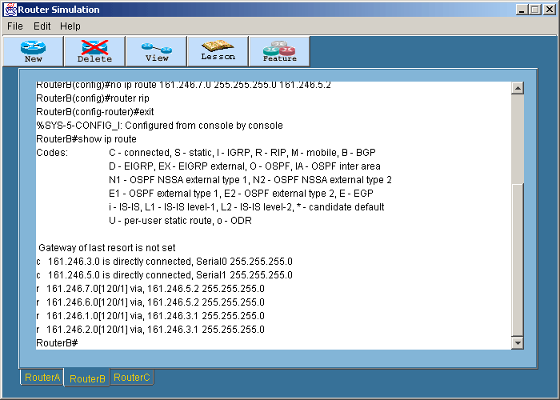
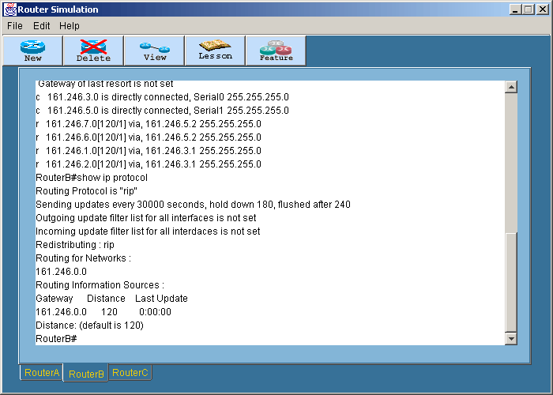

Dynamic Routing with RIP
การทดลองนี้เป็นการ
- Login ไปยังเราเตอร์ที่ต้องการ เข้าสู่ Privilege Mode โดยพิมพ์ en
หรือ enable
- ก่อนที่จะทำ Dynamic Routing เราต้องแน่ใจก่อนว่าไม่มี static routing โดยใช้คำสั่ง
no ip route
ตัวอย่าง :
RouterA#config t
RouterA(config)#no ip route 161.246.5.0 255.255.255.0
161.246.3.2
RouterA(config)#no ip route 161.246.7.0 255.255.255.0
161.246.3.2
RouterA(config)#no ip route 161.246.6.0 255.255.255.0
161.246.3.2
RouterB#config t
RouterB(config)#no ip route 161.246.1.0 255.255.255.0
161.246.3.1
RouterB(config)#no ip route 161.246.2.0 255.255.255.0
161.246.3.1
RouterB(config)#no ip route 161.246.7.0 255.255.255.0
161.246.5.2
RouterB(config)#no ip route 161.246.6.0 255.255.255.0
161.246.5.2
RouterC#config t
RouterC(config)#no ip route 161.246.1.0 255.255.255.0
161.246.5.1
RouterC(config)#no ip route 161.246.2.0 255.255.255.0
161.246.5.1
RouterC(config)#no ip route 161.246.3.0 255.255.255.0
161.246.5.1
- ไปที่ Configuration Mode ของทุกเราเตอร์แล้วพิมพ์คำสั่ง Router
Rip เช่นที่ RouterA
RouterA#config t
RouterA(config)#router rip
- ใส่วง network ที่ต้องการลงไปโดยพิมพ์
RouterA(config-router)#network 161.246.0.0
- ออกจาก configuration mode แล้วพิมพ์
RouterB#show ip route

Router#show ip protocol

- ทำการบันทึกค่าคอนฟิคโดยการพิมพ์ copy run start
สำหรับโหมดการทำงานทั้งหมดของเราเตอร์สามารถดูได้ในสรุปคำสั่งทั้งหมด
|
 Lesson 7
Lesson 7